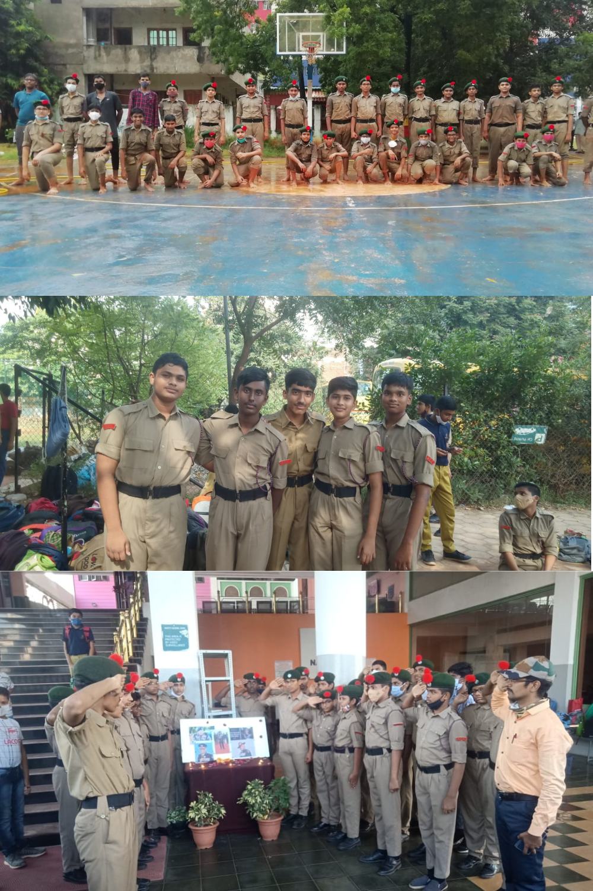
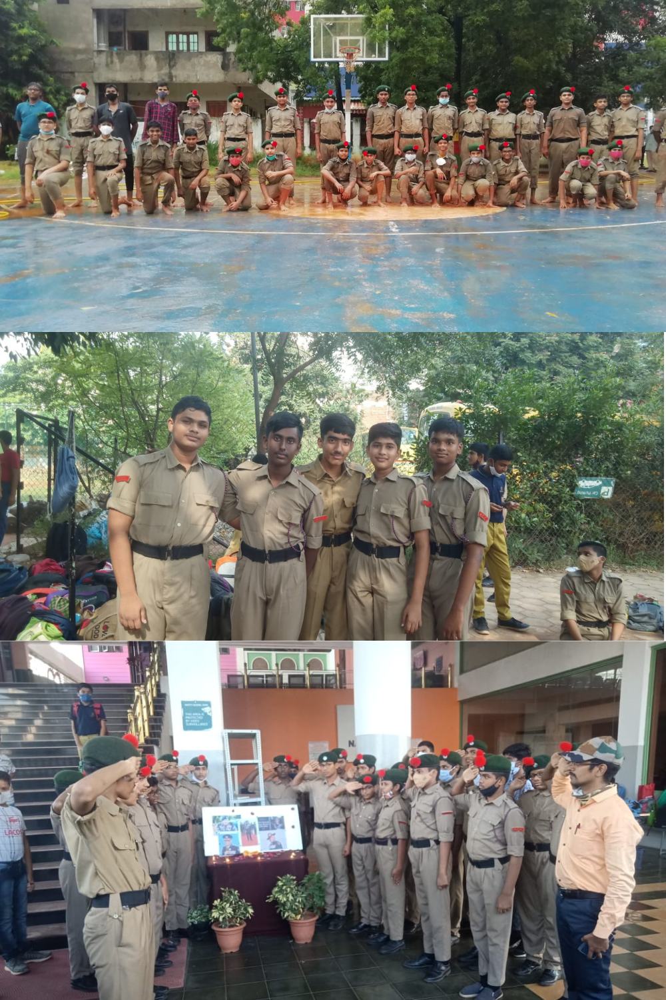

Taekwondo :
Taekwondo is a korean martial art and combat sport that heavily emphasizes kicking techniques.
Unlike karate and other martial arts Taekwondo has both body and head protection meaning there is
no restriction on power during fights like karate does.
I started Taekwondo in 2017 as a hobby in school and participated in a district tournament just two weeks
after joining, securing a silver medal. Since only gold medalists qualified for the state level, I missed that opportunity.
Determined to improve, I trained rigorously for a year and returned to district competitions, advancing up to the
zonal level, where I lost in the first round. I then participated in two more district tournaments, winning gold in both,
though I couldn’t continue further due to academic commitments and distant venues.
When the pandemic hit, I took a nearly two-year break. Upon returning in 2021, I competed in multiple district tournaments, winning
all of them. After these three golds, I have now won seven district tournaments consecutively and advanced to two state-level
competitions, a zonal, and a national tournament, including two knockout victories where my opponents were knocked unconscious.
During this period, I also passed my black belt test on the first attempt.
Although I have now stopped regular practice, I still participate in tournaments whenever circumstances allow. Below is a summary
of my acheivements in Taekwondo.
- 7x District Gold
- 2x School Gold
- 1x District Silver
- 3x State Participation
- 2x Zonal Participation
- National Participation